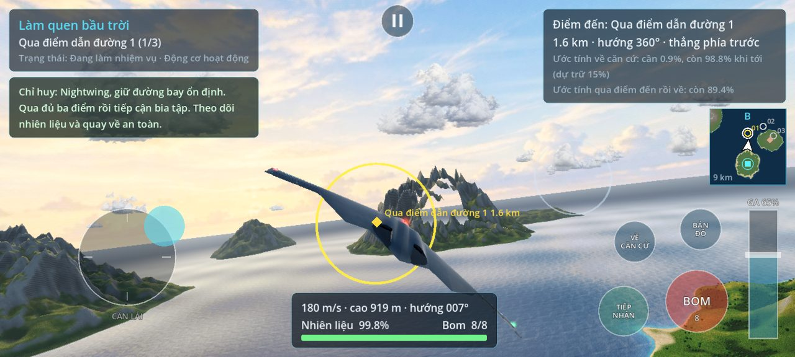
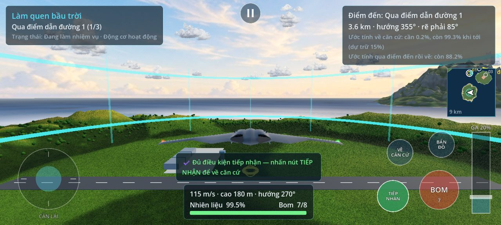
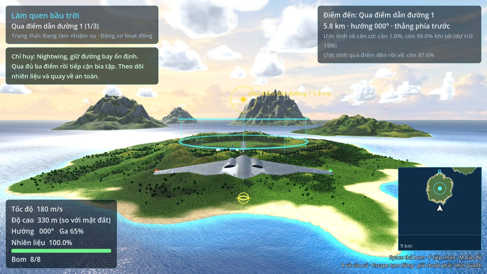
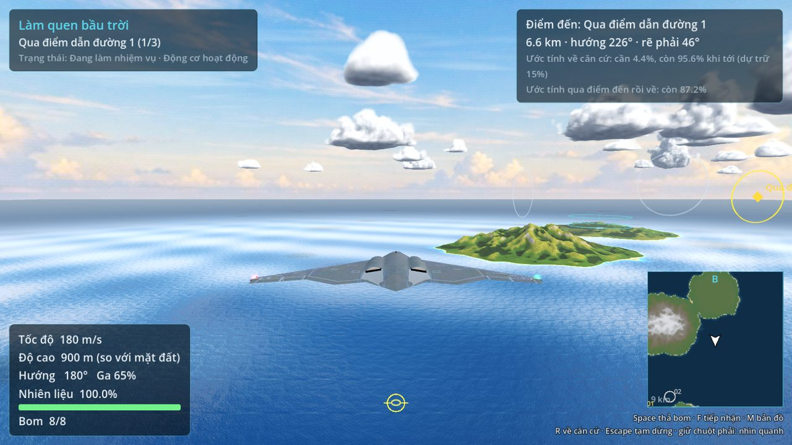
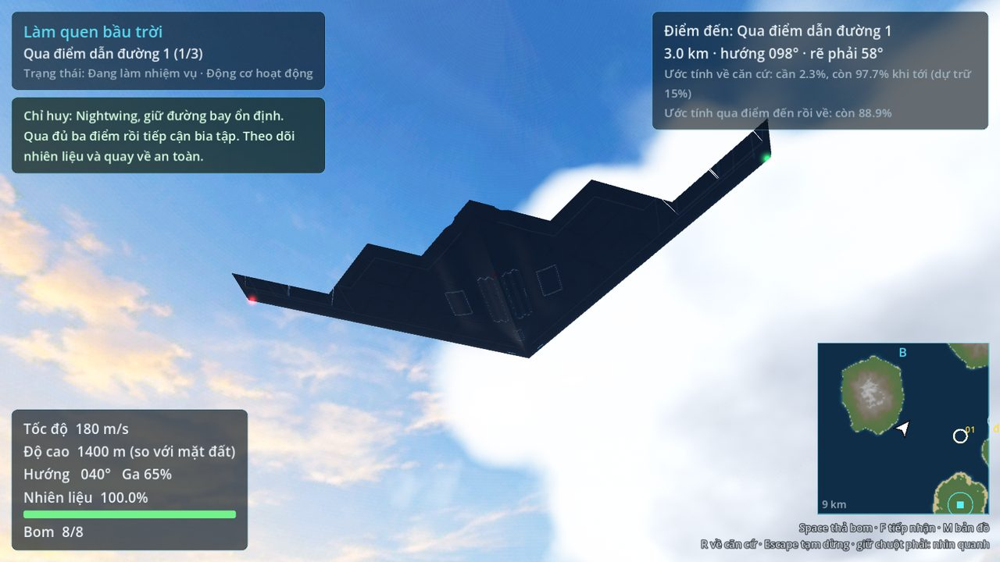

Trong game có gì
3 nhiệm vụ
Làm quen bầu trời, phá ba mục tiêu tĩnh, rồi săn đoàn xe đang chạy. Hoàn thành nhiệm vụ trước để mở khóa nhiệm vụ sau.
Bom và nhiên liệu thật
8 quả bom rơi theo quỹ đạo thật, có vòng ngắm điểm rơi. Hết nhiên liệu thì máy bay lượn khẩn cấp 60 giây để tìm đường về.
Về căn cứ an toàn
Chỉ được tính thành công khi bay vào vòng tiếp nhận đúng độ cao, tốc độ và góc nghiêng rồi chạm TIẾP NHẬN.
Quần đảo Vesper
Sáu hòn đảo núi lửa có khe xói, rừng cây, vách đá ven biển, mây thể tích và bóng mây trôi trên mặt biển.
Điều khiển cảm ứng
Cần lái nổi bên trái, thanh ga bên phải, nút lớn cho bom và tiếp nhận; chạm được nhiều ngón cùng lúc.
Chơi không cần mạng
Không tài khoản, không quảng cáo, không gửi dữ liệu. Tiến độ lưu ngay trên máy.
Hình ảnh





Cài đặt trên Android
- Mở trang này trên điện thoại và bấm Tải APK cho Android (hoặc tải trên máy tính rồi chép file
GhostWing-debug.apksang điện thoại). - Mở file vừa tải trong thông báo hoặc ứng dụng Tệp. Nếu máy hỏi, cho phép trình duyệt/ứng dụng Tệp “Cài đặt ứng dụng không rõ nguồn gốc”.
- Bấm Cài đặt. Google Play Protect có thể cảnh báo vì đây là bản thử nghiệm chưa đưa lên Play Store — chọn Vẫn cài đặt nếu bạn tin nguồn này.
- Mở Ghost Wing, xoay ngang điện thoại. Lần đầu nên xem mục Điều khiển ở màn hình chính.
Cách điều khiển
| Cần lái (trái) | Chạm vào nửa dưới bên trái, cần lái sẽ đặt ngay dưới ngón cái. Đẩy lên/xuống để ngẩng/hạ mũi, sang trái/phải để nghiêng cánh và rẽ. |
| Thanh ga (phải) | Kéo tới mức ga muốn đặt; ga thấp tiết kiệm nhiên liệu, ga cao bay nhanh. |
| BOM | Mỗi lần chạm thả một quả. Vòng vàng trên mặt đất là điểm rơi dự kiến. |
| TIẾP NHẬN | Sáng lên khi đủ điều kiện hạ cánh ở căn cứ: trong vòng 650 m, cao 80–300 m, ≤130 m/s, nghiêng ≤20°. |
| BẢN ĐỒ · VỀ CĂN CỨ | Mở bản đồ lớn (game tạm dừng) hoặc đặt điểm đến về căn cứ. |
| II · nút Back | Tạm dừng. Chuyển sang ứng dụng khác thì game cũng tự tạm dừng. |
| Vuốt vùng trống | Xoay camera nhìn quanh máy bay. |
Lưu ý
Đây là bản thử nghiệm (debug). Game chưa được thử trên nhiều mẫu điện thoại. Nếu bị giật, vào Cài đặt → Chất lượng đồ họa và giữ mức Thấp (mặc định trên điện thoại). Bản cài này ký bằng khóa thử nghiệm, nên không cập nhật đè được lên bản Play Store sau này — khi đó hãy gỡ bản cũ trước.
- Tệp
GhostWing-debug.apk· 52 978 151 byte- Phiên bản
- 0.1.0 (mã 1) · gói
com.ghostwing.demo - Yêu cầu
- Android 7.0 (API 24) trở lên, CPU 64-bit (arm64-v8a), OpenGL ES 3.0
- SHA-256
- 90f43b727cc91f5415c96a08dcb1e947d3c613184863433feb55b1b382b23cbc
- Tất cả bản
- Trang Releases